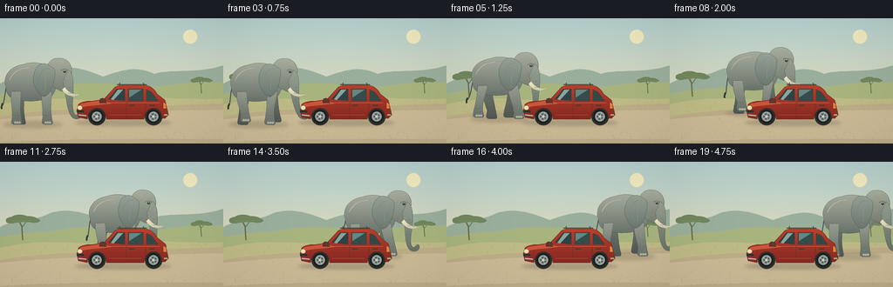
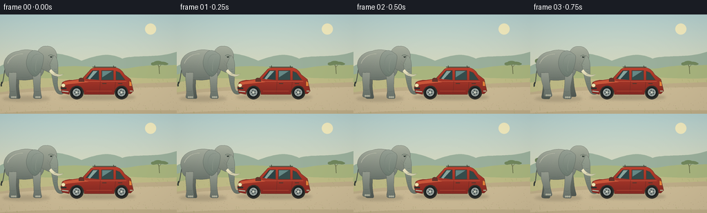
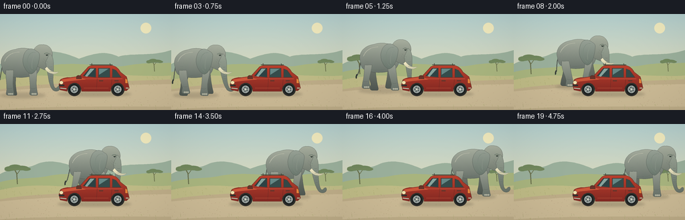
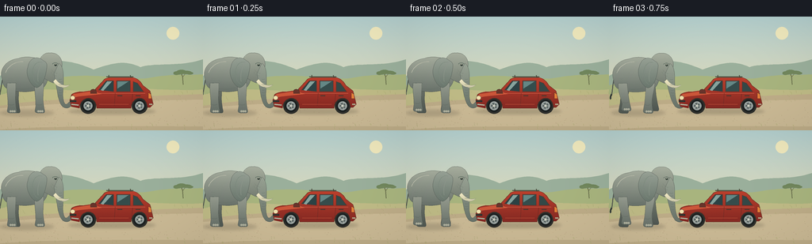

CODING AGENTS AS PIXEL WORLD MODELS
traex/GPT-6.1-Sol · dynamic_spatial_relationship_0068
点击播放 · 原生 RGB 像素
逐轮保存的候选
回放视频、检查图与代码变化。
每份候选均可单独播放。实际图片检查记录在下方工具轨迹中。
候选 01播放与检查图
点击播放 · 原生 RGB 像素


展开代码变化
--- 上一保存版本
+++ 本次保存版本
@@ -0,0 +1,217 @@
+from pathlib import Path
+import math, json
+import numpy as np
+from PIL import Image, ImageDraw, ImageFilter
+import artifact_io
+
+ROOT=Path(__file__).resolve().parent
+SPEC=json.loads((ROOT/'task_spec.json').read_text())
+W,H=SPEC['width'],SPEC['height']; S=4
+rng=np.random.default_rng(12)
+
+def poly_path(seq):
+ pts=[]; last=None
+ for item in seq:
+ if item[0]=='M':
+ last=np.array(item[1:],float); pts.append(tuple(last))
+ elif item[0]=='L':
+ last=np.array(item[1:],float); pts.append(tuple(last))
+ elif item[0]=='C':
+ a=last.copy(); b=np.array(item[1:3]); c=np.array(item[3:5]); e=np.array(item[5:7])
+ for t in np.linspace(0,1,20)[1:]:
+ p=(1-t)**3*a+3*(1-t)**2*t*b+3*(1-t)*t*t*c+t**3*e; pts.append(tuple(p))
+ last=e
+ elif item[0]=='Q':
+ a=last.copy(); b=np.array(item[1:3]); e=np.array(item[3:5])
+ for t in np.linspace(0,1,14)[1:]:
+ p=(1-t)**2*a+2*(1-t)*t*b+t*t*e;pts.append(tuple(p))
+ last=e
+ return pts
+
+class Paint:
+ def __init__(self,im):self.im=im;self.d=ImageDraw.Draw(im)
+ def line(self,pts,fill,width=1):
+ self.d.line([(int(x*S),int(y*S)) for x,y in pts],fill=fill,width=max(1,int(width*S)),joint='curve')
+ def ellipse(self,box,fill,outline=None,width=1):
+ self.d.ellipse(tuple(int(v*S) for v in box), fill, outline, max(1,int(width*S)))
+ def polygon(self,pts,fill):self.d.polygon([(int(x*S),int(y*S)) for x,y in pts],fill=fill)
+ def path(self,seq,color,outline=None,width=.6):
+ pts=poly_path(seq);self.polygon(pts,color)
+ if outline:self.line(pts+[pts[0]],outline,width)
+ def curve(self,seq,color,width=1):self.line(poly_path(seq),color,width)
+ def shaded(self,seq,top,bottom,outline=None,width=.5):
+ pts=poly_path(seq); mask=Image.new('L',self.im.size);md=ImageDraw.Draw(mask);md.polygon([(round(x*S),round(y*S)) for x,y in pts], fill=255)
+ yy=np.arange(H*S)[:,None,None]; y0=min(p[1] for p in pts)*S;y1=max(p[1] for p in pts)*S
+ a=np.clip((yy-y0)/max(1,y1-y0),0,1)
+ arr=np.broadcast_to(np.array(top)[None,None,:]*(1-a)+np.array(bottom)[None,None,:]*a,(H*S,W*S,3)).copy()
+ # Very fine painterly surface variation, shared at each time.
+ arr+=grain[:,:,None]*.65
+ tex=Image.fromarray(np.uint8(np.clip(arr,0,255)))
+ self.im.paste(tex,(0,0),mask);self.d=ImageDraw.Draw(self.im)
+ if outline:self.line(pts+[pts[0]],outline,width)
+
+grain=rng.normal(0,1,(H*S,W*S))
+
+def backdrop():
+ yy=np.arange(H*S)[:,None,None]/(H*S)
+ col=np.array([181,209,208])[None,None,:]*(1-yy)+np.array([242,221,175])[None,None,:]*yy
+ ar=np.broadcast_to(col,(H*S,W*S,3)).copy()+grain[:,:,None]*.38
+ im=Image.fromarray(np.uint8(np.clip(ar,0,255)));p=Paint(im)
+ # Soft haze, distant hills, grassland, and a quiet gravel road.
+ p.ellipse((210,13,226,29),(241,234,190))
+ p.path([('M',0,75),('C',22,63,37,69,53,61),('C',77,50,103,61,118,67),('C',144,58,158,55,177,64),('C',195,58,229,64,256,54),('L',256,97),('L',0,97)],(155,176,156))
+ p.path([('M',0,87),('C',31,79,53,83,76,77),('C',123,70,164,83,191,77),('C',221,72,239,75,256,73),('L',256,117),('L',0,117)],(169,181,127))
+ p.path([('M',0,99),('C',48,88,81,94,107,94),('C',171,87,225,96,256,92),('L',256,144),('L',0,144)],(192,188,135))
+ p.path([('M',0,113),('C',57,103,130,103,256,98),('L',256,144),('L',0,144)],(191,174,137))
+ p.path([('M',0,116),('C',88,108,166,107,256,105),('L',256,139),('C',140,138,56,139,0,143)],(204,187,150))
+ # Two acacia silhouettes keep the scene grounded without drawing attention.
+ def tree(x,y,k):
+ p.line([(x,y),(x-1*k,y-19*k),(x-5*k,y-26*k)],(106,112,77),1.9*k)
+ p.line([(x-1*k,y-17*k),(x+6*k,y-27*k)],(106,112,77),1.2*k)
+ for dx,dy,rx,ry in [(-12,-28,11,4),(-4,-30,12,5),(7,-29,13,4),(16,-27,8,3),(-16,-26,7,3)]:
+ p.ellipse((x+(dx-rx)*k,y+(dy-ry)*k,x+(dx+rx)*k,y+(dy+ry)*k),(113,135,93))
+ p.line([(x-17*k,y-27*k),(x+18*k,y-27*k)],(123,141,96),1*k)
+ tree(26,90,.83);tree(231,86,.53)
+ r=np.random.default_rng(20)
+ for i in range(260):
+ x=float(r.uniform(0,256));y=float(r.uniform(96,144))
+ if y<109 or y>137:
+ color=(154+int(r.integers(0,16)),157+int(r.integers(0,13)),103)
+ p.line([(x,y),(x-.7,y-r.uniform(1,3))],color,.4)
+ else:
+ size=r.uniform(.15,.55);p.ellipse((x,y,x+size*1.8,y+size),(184,165,131))
+ return im
+
+BG=backdrop()
+
+def shadow(im,x,y,rx,ry,opacity=55):
+ layer=Image.new('RGBA',im.size);d=ImageDraw.Draw(layer)
+ d.ellipse(tuple(round(v*S) for v in (x-rx,y-ry,x+rx,y+ry)),fill=(54,50,40,opacity))
+ layer=layer.filter(ImageFilter.GaussianBlur(1.8*S));im.paste(layer,(0,0),layer)
+
+def car(im):
+ p=Paint(im)
+ # Parked left-facing red station wagon, with unmistakable front lamps and hood.
+ dark=(41,45,44)
+ for x in (111,176):
+ p.ellipse((x-10,103,x+10,123),(47,48,44))
+ p.ellipse((x-7.8,105.2,x+7.8,120.8),(28,33,33))
+ p.ellipse((x-5.7,107.3,x+5.7,118.7),(151,160,157))
+ p.ellipse((x-3.6,109.4,x+3.6,116.6),(87,98,96))
+ for a in np.linspace(0,2*math.pi,6)[:-1]:
+ p.line([(x,113),(x+5*math.cos(a),113+5*math.sin(a))],(183,189,181),.8)
+ p.ellipse((x-1.4,111.6,x+1.4,114.4),(209,212,198))
+ p.shaded([('M',88,106),('L',90,99),('Q',94,95,104,95),('L',119,93),('L',131,80),('Q',134,77,140,77),('L',167,77),('Q',175,78,180,87),('L',189,94),('L',193,111),('L',189,115),('L',186,115),('C',186,99,166,99,165,116),('L',122,116),('C',122,99,101,99,100,116),('L',90,114)],(188,65,46),(133,41,35),(103,47,36),.6)
+ # Far face on hood, glazing and reflections.
+ p.path([('M',93,98),('L',118,94),('L',128,98),('L',99,101),('L',89,103)],(204,87,58))
+ p.path([('M',124,93),('L',134,81),('L',143,81),('L',143,95)],(45,67,69),(99,54,43),.5)
+ p.path([('M',147,81),('L',164,81),('L',164,95),('L',147,95)],(54,77,76),(96,49,41),.5)
+ p.path([('M',168,82),('L',173,84),('L',181,95),('L',168,95)],(52,73,71),(96,49,41),.5)
+ p.path([('M',135,82),('L',141,82),('L',130,94),('L',127,93)],(135,164,157))
+ p.path([('M',148,82),('L',162,82),('L',148,91)],(101,136,134))
+ p.line([(124,97),(183,97)],(222,104,77),.7)
+ p.line([(145,97),(144,113)],(109,45,38),.6)
+ p.line([(167,98),(166,109)],(108,43,34),.6)
+ p.line([(125,111),(162,111)],(176,70,51),.8)
+ p.line([(148,100),(154,100)],(61,56,48),1)
+ p.line([(171,100),(177,100)],(61,56,48),1)
+ p.path([('M',121,93),('Q',116,91,114,94),('L',114,97),('L',122,97)],(105,52,43),(65,49,39),.5)
+ p.ellipse((88.7,100,94.5,105.5),(244,228,176),(122,103,78),.5)
+ p.line([(88,107),(96,107)],(45,51,48),2.3)
+ p.line([(90,111),(99,112)],(178,185,163),1.8)
+ p.path([('M',187,96),('L',190,98),('L',191,104),('L',187,104)],(232,131,59),(107,48,36),.6)
+ p.line([(188,111),(192,111)],(177,171,141),1.8)
+ p.line([(134,76),(168,76)],(69,68,53),1)
+ p.line([(137,74),(137,77)],(71,71,56),1)
+ p.line([(164,74),(165,77)],(71,71,56),1)
+
+
+def elephant(im,x,ground,phase,moving):
+ p=Paint(im)
+ bob=math.sin(phase*2)*.55*moving
+ g=ground+bob
+ def path(seq):
+ return [(q[0],)+tuple(v+(x if j%2==0 else g) for j,v in enumerate(q[1:])) for q in seq]
+ def sh(seq,a,b,outline=(70,77,73),width=.45):p.shaded(path(seq),a,b,outline,width)
+ def ln(seq,color,width=.6):p.curve(path(seq),color,width)
+ # Tail is attached to the rump, swaying with each stride.
+ sw=math.sin(phase)*2*moving
+ ln([('M',-26,-48),('C',-31,-39,-30,-27,-33+sw,-21)],(83,88,81),1.4)
+ ln([('M',-33+sw,-23),('Q',-35+sw,-19,-34+sw,-17)],(53,60,56),2)
+ # Four articulated legs. The far pair is darker and drawn beneath the torso.
+ def leg(root,ph,far=False):
+ a=math.sin(ph)*6*moving
+ lift=max(0,math.cos(ph))*3.7*moving
+ knee=a*.42
+ seq=[('M',root-5,-37),('C',root-6,-27,root+knee-4,-20,root+a-4,-8-lift),('L',root+a-5,-2-lift),('Q',root+a-5,1-lift,root+a-1,1-lift),('L',root+a+6,1-lift),('Q',root+a+8,0-lift,root+a+7,-3-lift),('C',root+a+4,-17,root+knee+6,-23,root+6,-37)]
+ sh(seq,(115,122,111) if far else (152,158,145),(80,88,82) if far else (104,113,105))
+ if not far:
+ for dx in [-2,.6,3.2]:
+ p.ellipse((x+root+a+dx,g-2.4-lift,x+root+a+dx+2.5,g+.1-lift),(177,178,159))
+ ln([('M',root+a-3,-10-lift),('Q',root+a+1,-8-lift,root+a+4,-10-lift)],(90,99,91),.45)
+ leg(-14,phase+math.pi,True);leg(17,phase,True)
+ # The heavy body, slightly high shoulders and gently rounded rump.
+ sh([('M',-29,-41),('C',-34,-55,-24,-66,-9,-68),('C',2,-72,18,-70,26,-60),('C',32,-52,29,-34,20,-29),('C',4,-24,-15,-25,-25,-31),('Q',-29,-35,-29,-41)],(167,174,159),(107,116,108))
+ # Soft flank contour.
+ ln([('M',-25,-50),('C',-21,-60,-12,-64,-3,-64)],(186,188,170),.75)
+ ln([('M',-24,-35),('Q',-8,-26,8,-31)],(103,114,105),.6)
+ leg(-18,phase,False);leg(17,phase+math.pi,False)
+ # Neck and domed head, then the long tapered trunk.
+ sh([('M',15,-56),('C',16,-67,22,-76,31,-75),('C',42,-76,48,-66,46,-57),('C',45,-52,48,-46,46,-39),('L',35,-37),('C',28,-40,18,-44,15,-56)],(169,176,160),(119,127,116))
+ trunk=math.sin(phase+.5)*2.4*moving
+ sh([('M',42,-62),('C',48,-58,48,-49,48,-42),('C',48,-30,46+trunk,-18,49+trunk,-12),('Q',51+trunk,-8,54+trunk,-12),('Q',58+trunk,-15,58+trunk,-10),('C',57+trunk,-4,49+trunk,-4,46+trunk,-8),('C',41+trunk,-14,40,-29,38,-38),('L',36,-49)],(153,163,148),(105,115,105))
+ # Ivory tusk on the visible side, curving forward, clearly separate from trunk.
+ sh([('M',38,-42),('C',43,-35,50,-32,56,-35),('C',50,-28,40,-31,35,-39)],(247,238,199),(205,200,169), (131,137,119),.35)
+ # Large fan-shaped ear with creases: characteristic African elephant outline.
+ ear=math.sin(phase-.6)*1.1*moving
+ sh([('M',23,-65),('C',14,-73,5,-68,3+ear,-57),('C',0+ear,-49,5+ear,-34,14+ear,-31),('C',22+ear,-32,26,-46,27,-57),('Q',28,-63,23,-65)],(153,163,151),(107,120,110))
+ ln([('M',21,-63),('C',13,-65,8,-57,9,-48),('Q',10,-38,16,-35)],(123,138,125),.65)
+ ln([('M',20,-61),('Q',14,-50,16,-39)],(143,153,140),.55)
+ # Brow, small eye, cheek wrinkles and trunk folds.
+ ln([('M',34,-61),('Q',38,-64,41,-61)],(103,117,105),.9)
+ p.ellipse((x+36.5,g-61,x+39.6,g-58.5),(51,63,57))
+ p.ellipse((x+37.6,g-60.8,x+38.35,g-60.1),(232,228,196))
+ ln([('M',33,-54),('Q',35,-50,40,-49)],(112,125,112),.45)
+ ln([('M',32,-51),('Q',34,-46,39,-46)],(114,125,112),.4)
+ for j in range(7):
+ y=-42+j*3.4;shift=trunk*max(0,(y+40)/28)
+ ln([('M',42+shift,y),('Q',44+shift,y+1,46+shift,y+.1)],(95,110,99),.36)
+ # A few sparse folds on knees and the flank; no distracting hard outlines.
+ for y in (-43,-40,-37):ln([('M',-22,y),('Q',-19,y+1,-17,y)],(119,131,120),.35)
+
+
+def render(i):
+ im=BG.copy()
+ u=np.clip((i-2)/15,0,1)
+ # Smooth acceleration, constant central speed, and a gentle final stop.
+ def ease(v):
+ if v<.15:return v*v/.3
+ if v>.85:return 1-(1-v)**2/.3
+ return v-.075
+ # Normalize piecewise integrated speed to land exactly at the rear.
+ progress=ease(float(u))/.925 if u<=.85 else (1-(1-u)**2/.3-.075)/.925
+ progress=float(np.clip(progress,0,1))
+ x=36+170*progress
+ # The route rounds the front corner and then runs along the far side.
+ depth=np.clip(progress/.28,0,1)
+ depth=depth*depth*(3-2*depth)
+ ground=121-13*depth
+ moving=0.0 if i<=1 or i>=18 else min(1,(i-1)/2,(18-i)/2)
+ phase=progress*math.pi*12
+ shadow(im,141,120,55,3.8,54)
+ shadow(im,x+2,ground+1,34,4,45)
+ # The elephant becomes occluded by the car as it passes behind it.
+ elephant(im,x,ground,phase,moving)
+ car(im)
+ # Fine film-like finish, with supersampled curved silhouettes.
+ im=im.resize((W,H),Image.Resampling.LANCZOS)
+ a=np.asarray(im).astype(float)
+ yy,xx=np.mgrid[0:H,0:W]
+ vignette=1-.035*((xx-W/2)**2/(W/2)**2+(yy-H/2)**2/(H/2)**2)
+ a*=vignette[:,:,None]
+ return np.uint8(np.clip(a,0,255))
+
+if __name__=='__main__':
+ frames=np.stack([render(i) for i in range(SPEC['frames'])])
+ artifact_io.save(frames,ROOT)
+ print(f'Saved {len(frames)} RGB frames, {W}x{H}, {SPEC["fps"]} fps')
候选 02播放与检查图
点击播放 · 原生 RGB 像素


展开代码变化
--- 上一保存版本
+++ 本次保存版本
@@ -186,12 +186,12 @@
# Smooth acceleration, constant central speed, and a gentle final stop.
def ease(v):
if v<.15:return v*v/.3
- if v>.85:return 1-(1-v)**2/.3
+ if v>.85:return .85-(1-v)**2/.3
return v-.075
# Normalize piecewise integrated speed to land exactly at the rear.
- progress=ease(float(u))/.925 if u<=.85 else (1-(1-u)**2/.3-.075)/.925
+ progress=ease(float(u))/.85
progress=float(np.clip(progress,0,1))
- x=36+170*progress
+ x=32+164*progress
# The route rounds the front corner and then runs along the far side.
depth=np.clip(progress/.28,0,1)
depth=depth*depth*(3-2*depth)
可观测工具轨迹
实际执行的命令与返回图片。
命令 1exit 0
/bin/bash -lc 'ls -la; cat prompt.txt; cat GENERATION_RULES.md; cat task_spec.json'
命令 2exit 0
/bin/bash -lc "cat artifact_io.py; python - <<'PY'
import numpy,PIL
print('ok')
PY"命令 3exit 0
/bin/bash -lc "cat > generate.py <<'PY'
from pathlib import Path
import math, json
import numpy as np
from PIL import Image, ImageDraw, ImageFilter
import artifact_io
ROOT=Path(__file__).resolve().parent
SPEC=json.loads((ROOT/'task_spec.json').read_text())
W,H=SPEC['width'],SPEC['height']; S=4
rng=np.random.default_rng(12)
def poly_path(seq):
pts=[]; last=None
for item in seq:
if item[0]=='M':
last=np.array(item[1:],float); pts.append(tuple(last))
elif item[0]=='L':
last=np.array(item[1:],float); pts.append(tuple(last))
elif item[0]=='C':
a=last.copy(); b=np.array(item[1:3]); c=np.array(item[3:5]); e=np.array(item[5:7])
for t in np.linspace(0,1,20)[1:]:
p=(1-t)**3*a+3*(1-t)**2*t*b+3*(1-t)*t*t*c+t**3*e; pts.append(tuple(p))
last=e
elif item[0]=='Q':
a=last.copy(); b=np.array(item[1:3]); e=np.array(item[3:5])
for t in np.linspace(0,1,14)[1:]:
p=(1-t)**2*a+2*(1-t)*t*b+t*t*e;pts.append(tuple(p))
last=e
return pts
class Paint:
def __init__(self,im):self.im=im;self.d=ImageDraw.Draw(im)
def line(self,pts,fill,width=1):
self.d.line([(int(x*S),int(y*S)) for x,y in pts],fill=fill,width=max(1,int(width*S)),joint='curve')
def ellipse(self,box,fill,outline=None,width=1):
self.d.ellipse(tuple(int(v*S) for v in box), fill, outline, max(1,int(width*S)))
def polygon(self,pts,fill):self.d.polygon([(int(x*S),int(y*S)) for x,y in pts],fill=fill)
def path(self,seq,color,outline=None,width=.6):
pts=poly_path(seq);self.polygon(pts,color)
if outline:self.line(pts+[pts[0]],outline,width)
def curve(self,seq,color,width=1):self.line(poly_path(seq),color,width)
def shaded(self,seq,top,bottom,outline=None,width=.5):
pts=poly_path(seq); mask=Image.new('L',self.im.size);md=ImageDraw.Draw(mask);md.polygon([(round(x*S),round(y*S)) for x,y in pts], fill=255)
yy=np.arange(H*S)[:,None,None]; y0=min(p[1] for p in pts)*S;y1=max(p[1] for p in pts)*S
a=np.clip((yy-y0)/max(1,y1-y0),0,1)
arr=np.broadcast_to(np.array(top)[None,None,:]*(1-a)+np.array(bottom)[None,None,:]*a,(H*S,W*S,3)).copy()
# Very fine painterly surface variation, shared at each time.
arr+=grain[:,:,None]*.65
tex=Image.fromarray(np.uint8(np.clip(arr,0,255)))
self.im.paste(tex,(0,0),mask);self.d=ImageDraw.Draw(self.im)
if outline:self.line(pts+[pts[0]],outline,width)
grain=rng.normal(0,1,(H*S,W*S))
def backdrop():
yy=np.arange(H*S)[:,None,None]/(H*S)
col=np.array([181,209,208])[None,None,:]*(1-yy)+np.array([242,221,175])[None,None,:]*yy
ar=np.broadcast_to(col,(H*S,W*S,3)).copy()+grain[:,:,None]*.38
im=Image.fromarray(np.uint8(np.clip(ar,0,255)));p=Paint(im)
# Soft haze, distant hills, grassland, and a quiet gravel road.
p.ellipse((210,13,226,29),(241,234,190))
p.path([('M',0,75),('C',22,63,37,69,53,61),('C',77,50,103,61,118,67),('C',144,58,158,55,177,64),('C',195,58,229,64,256,54),('L',256,97),('L',0,97)],(155,176,156))
p.path([('M',0,87),('C',31,79,53,83,76,77),('C',123,70,164,83,191,77),('C',221,72,239,75,256,73),('L',256,117),('L',0,117)],(169,181,127))
p.path([('M',0,99),('C',48,88,81,94,107,94),('C',171,87,225,96,256,92),('L',256,144),('L',0,144)],(192,188,135))
p.path([('M',0,113),('C',57,103,130,103,256,98),('L',256,144),('L',0,144)],(191,174,137))
p.path([('M',0,116),('C',88,108,166,107,256,105),('L',256,139),('C',140,138,56,139,0,143)],(204,187,150))
# Two acacia silhouettes keep the scene grounded without drawing attention.
def tree(x,y,k):
p.line([(x,y),(x-1*k,y-19*k),(x-5*k,y-26*k)],(106,112,77),1.9*k)
p.line([(x-1*k,y-17*k),(x+6*k,y-27*k)],(106,112,77),1.2*k)
for dx,dy,rx,ry in [(-12,-28,11,4),(-4,-30,12,5),(7,-29,13,4),(16,-27,8,3),(-16,-26,7,3)]:
p.ellipse((x+(dx-rx)*k,y+(dy-ry)*k,x+(dx+rx)*k,y+(dy+ry)*k),(113,135,93))
p.line([(x-17*k,y-27*k),(x+18*k,y-27*k)],(123,141,96),1*k)
tree(26,90,.83);tree(231,86,.53)
r=np.random.default_rng(20)
for i in range(260):
x=float(r.uniform(0,256));y=float(r.uniform(96,144))
if y<109 or y>137:
color=(154+int(r.integers(0,16)),157+int(r.integers(0,13)),103)
p.line([(x,y),(x-.7,y-r.uniform(1,3))],color,.4)
else:
size=r.uniform(.15,.55);p.ellipse((x,y,x+size*1.8,y+size),(184,165,131))
return im
BG=backdrop()
def shadow(im,x,y,rx,ry,opacity=55):
layer=Image.new('RGBA',im.size);d=ImageDraw.Draw(layer)
d.ellipse(tuple(round(v*S) for v in (x-rx,y-ry,x+rx,y+ry)),fill=(54,50,40,opacity))
layer=layer.filter(ImageFilter.GaussianBlur(1.8*S));im.paste(layer,(0,0),layer)
def car(im):
p=Paint(im)
# Parked left-facing red station wagon, with unmistakable front lamps and hood.
dark=(41,45,44)
for x in (111,176):
p.ellipse((x-10,103,x+10,123),(47,48,44))
p.ellipse((x-7.8,105.2,x+7.8,120.8),(28,33,33))
p.ellipse((x-5.7,107.3,x+5.7,118.7),(151,160,157))
p.ellipse((x-3.6,109.4,x+3.6,116.6),(87,98,96))
for a in np.linspace(0,2*math.pi,6)[:-1]:
p.line([(x,113),(x+5*math.cos(a),113+5*math.sin(a))],(183,189,181),.8)
p.ellipse((x-1.4,111.6,x+1.4,114.4),(209,212,198))
p.shaded([('M',88,106),('L',90,99),('Q',94,95,104,95),('L',119,93),('L',131,80),('Q',134,77,140,77),('L',167,77),('Q',175,78,180,87),('L',189,94),('L',193,111),('L',189,115),('L',186,115),('C',186,99,166,99,165,116),('L',122,116),('C',122,99,101,99,100,116),('L',90,114)],(188,65,46),(133,41,35),(103,47,36),.6)
# Far face on hood, glazing and reflections.
p.path([('M',93,98),('L',118,94),('L',128,98),('L',99,101),('L',89,103)],(204,87,58))
p.path([('M',124,93),('L',134,81),('L',143,81),('L',143,95)],(45,67,69),(99,54,43),.5)
p.path([('M',147,81),('L',164,81),('L',164,95),('L',147,95)],(54,77,76),(96,49,41),.5)
p.path([('M',168,82),('L',173,84),('L',181,95),('L',168,95)],(52,73,71),(96,49,41),.5)
p.path([('M',135,82),('L',141,82),('L',130,94),('L',127,93)],(135,164,157))
p.path([('M',148,82),('L',162,82),('L',148,91)],(101,136,134))
p.line([(124,97),(183,97)],(222,104,77),.7)
p.line([(145,97),(144,113)],(109,45,38),.6)
p.line([(167,98),(166,109)],(108,43,34),.6)
p.line([(125,111),(162,111)],(176,70,51),.8)
p.line([(148,100),(154,100)],(61,56,48),1)
p.line([(171,100),(177,100)],(61,56,48),1)
p.path([('M',121,93),('Q',116,91,114,94),('L',114,97),('L',122,97)],(105,52,43),(65,49,39),.5)
p.ellipse((88.7,100,94.5,105.5),(244,228,176),(122,103,78),.5)
p.line([(88,107),(96,107)],(45,51,48),2.3)
p.line([(90,111),(99,112)],(178,185,163),1.8)
p.path([('M',187,96),('L',190,98),('L',191,104),('L',187,104)],(232,131,59),(107,48,36),.6)
p.line([(188,111),(192,111)],(177,171,141),1.8)
p.line([(134,76),(168,76)],(69,68,53),1)
p.line([(137,74),(137,77)],(71,71,56),1)
p.line([(164,74),(165,77)],(71,71,56),1)
def elephant(im,x,ground,phase,moving):
p=Paint(im)
bob=math.sin(phase*2)*.55*moving
g=ground+bob
def path(seq):
return [(q[0],)+tuple(v+(x if j%2==0 else g) for j,v in enumerate(q[1:])) for q in seq]
def sh(seq,a,b,outline=(70,77,73),width=.45):p.shaded(path(seq),a,b,outline,width)
def ln(seq,color,width=.6):p.curve(path(seq),color,width)
# Tail is attached to the rump, swaying with each stride.
sw=math.sin(phase)*2*moving
ln([('M',-26,-48),('C',-31,-39,-30,-27,-33+sw,-21)],(83,88,81),1.4)
ln([('M',-33+sw,-23),('Q',-35+sw,-19,-34+sw,-17)],(53,60,56),2)
# Four articulated legs. The far pair is darker and drawn beneath the torso.
def leg(root,ph,far=False):
a=math.sin(ph)*6*moving
lift=max(0,math.cos(ph))*3.7*moving
knee=a*.42
seq=[('M',root-5,-37),('C',root-6,-27,root+knee-4,-20,root+a-4,-8-lift),('L',root+a-5,-2-lift),('Q',root+a-5,1-lift,root+a-1,1-lift),('L',root+a+6,1-lift),('Q',root+a+8,0-lift,root+a+7,-3-lift),('C',root+a+4,-17,root+knee+6,-23,root+6,-37)]
sh(seq,(115,122,111) if far else (152,158,145),(80,88,82) if far else (104,113,105))
if not far:
for dx in [-2,.6,3.2]:
p.ellipse((x+root+a+dx,g-2.4-lift,x+root+a+dx+2.5,g+.1-lift),(177,178,159))
ln([('M',root+a-3,-10-lift),('Q',root+a+1,-8-lift,root+a+4,-10-lift)],(90,99,91),.45)
leg(-14,phase+math.pi,True);leg(17,phase,True)
# The heavy body, slightly high shoulders and gently rounded rump.
sh([('M',-29,-41),('C',-34,-55,-24,-66,-9,-68),('C',2,-72,18,-70,26,-60),('C',32,-52,29,-34,20,-29),('C',4,-24,-15,-25,-25,-31),('Q',-29,-35,-29,-41)],(167,174,159),(107,116,108))
# Soft flank contour.
ln([('M',-25,-50),('C',-21,-60,-12,-64,-3,-64)],(186,188,170),.75)
ln([('M',-24,-35),('Q',-8,-26,8,-31)],(103,114,105),.6)
leg(-18,phase,False);leg(17,phase+math.pi,False)
# Neck and domed head, then the long tapered trunk.
sh([('M',15,-56),('C',16,-67,22,-76,31,-75),('C',42,-76,48,-66,46,-57),('C',45,-52,48,-46,46,-39),('L',35,-37),('C',28,-40,18,-44,15,-56)],(169,176,160),(119,127,116))
trunk=math.sin(phase+.5)*2.4*moving
sh([('M',42,-62),('C',48,-58,48,-49,48,-42),('C',48,-30,46+trunk,-18,49+trunk,-12),('Q',51+trunk,-8,54+trunk,-12),('Q',58+trunk,-15,58+trunk,-10),('C',57+trunk,-4,49+trunk,-4,46+trunk,-8),('C',41+trunk,-14,40,-29,38,-38),('L',36,-49)],(153,163,148),(105,115,105))
# Ivory tusk on the visible side, curving forward, clearly separate from trunk.
sh([('M',38,-42),('C',43,-35,50,-32,56,-35),('C',50,-28,40,-31,35,-39)],(247,238,199),(205,200,169), (131,137,119),.35)
# Large fan-shaped ear with creases: characteristic African elephant outline.
ear=math.sin(phase-.6)*1.1*moving
sh([('M',23,-65),('C',14,-73,5,-68,3+ear,-57),('C',0+ear,-49,5+ear,-34,14+ear,-31),('C',22+ear,-32,26,-46,27,-57),('Q',28,-63,23,-65)],(153,163,151),(107,120,110))
ln([('M',21,-63),('C',13,-65,8,-57,9,-48),('Q',10,-38,16,-35)],(123,138,125),.65)
ln([('M',20,-61),('Q',14,-50,16,-39)],(143,153,140),.55)
# Brow, small eye, cheek wrinkles and trunk folds.
ln([('M',34,-61),('Q',38,-64,41,-61)],(103,117,105),.9)
p.ellipse((x+36.5,g-61,x+39.6,g-58.5),(51,63,57))
p.ellipse((x+37.6,g-60.8,x+38.35,g-60.1),(232,228,196))
ln([('M',33,-54),('Q',35,-50,40,-49)],(112,125,112),.45)
ln([('M',32,-51),('Q',34,-46,39,-46)],(114,125,112),.4)
for j in range(7):
y=-42+j*3.4;shift=trunk*max(0,(y+40)/28)
ln([('M',42+shift,y),('Q',44+shift,y+1,46+shift,y+.1)],(95,110,99),.36)
# A few sparse folds on knees and the flank; no distracting hard outlines.
for y in (-43,-40,-37):ln([('M',-22,y),('Q',-19,y+1,-17,y)],(119,131,120),.35)
def render(i):
im=BG.copy()
u=np.clip((i-2)/15,0,1)
# Smooth acceleration, constant central speed, and a gentle final stop.
def ease(v):
if v<.15:return v*v/.3
if v>.85:return 1-(1-v)**2/.3
return v-.075
# Normalize piecewise integrated speed to land exactly at the rear.
progress=ease(float(u))/.925 if u<=.85 else (1-(1-u)**2/.3-.075)/.925
progress=float(np.clip(progress,0,1))
x=36+170*progress
# The route rounds the front corner and then runs along the far side.
depth=np.clip(progress/.28,0,1)
depth=depth*depth*(3-2*depth)
ground=121-13*depth
moving=0.0 if i<=1 or i>=18 else min(1,(i-1)/2,(18-i)/2)
phase=progress*math.pi*12
shadow(im,141,120,55,3.8,54)
shadow(im,x+2,ground+1,34,4,45)
# The elephant becomes occluded by the car as it passes behind it.
elephant(im,x,ground,phase,moving)
car(im)
# Fine film-like finish, with supersampled curved silhouettes.
im=im.resize((W,H),Image.Resampling.LANCZOS)
a=np.asarray(im).astype(float)
yy,xx=np.mgrid[0:H,0:W]
vignette=1-.035*((xx-W/2)**2/(W/2)**2+(yy-H/2)**2/(H/2)**2)
a*=vignette[:,:,None]
return np.uint8(np.clip(a,0,255))
if __name__=='__main__':
frames=np.stack([render(i) for i in range(SPEC['frames'])])
artifact_io.save(frames,ROOT)
print(f'Saved {len(frames)} RGB frames, {W}x{H}, {SPEC[\"fps\"]} fps')
PY
python generate.py"命令 4exit 0
/bin/bash -lc "python - <<'PY'
p='generate.py'
s=open(p).read()
s=s.replace('if v>.85:return 1-(1-v)**2/.3','if v>.85:return .85-(1-v)**2/.3')
s=s.replace('progress=ease(float(u))/.925 if u<=.85 else (1-(1-u)**2/.3-.075)/.925','progress=ease(float(u))/.85')
s=s.replace('x=36+170*progress','x=32+164*progress')
open(p,'w').write(s)
PY
python generate.py
python - <<'PY'
import numpy as np
from pathlib import Path
p=Path('.')
a=np.load('pixels.npz')['pixels']
assert a.shape==(144,256,20)
assert len(list((p/'frames').glob('*.png')))==20
for f in ['generate.py','pixels.npz','index.html','inspection.png','transition_check.png']:
print(f, (p/f).stat().st_size)
PY"保存候选 2 份；完成命令 4 次；可验证图片返回 0 张。原始 API 响应与完整日志保留在本地。